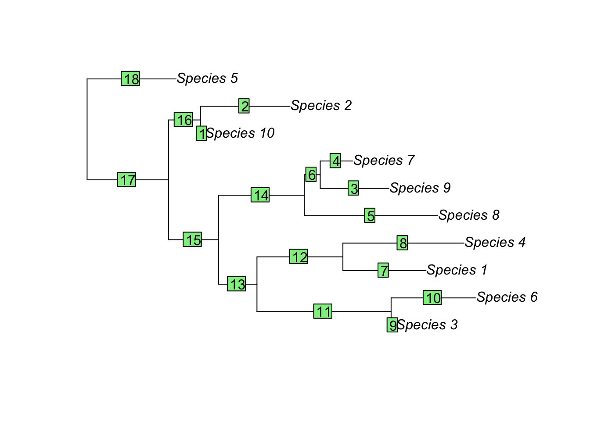
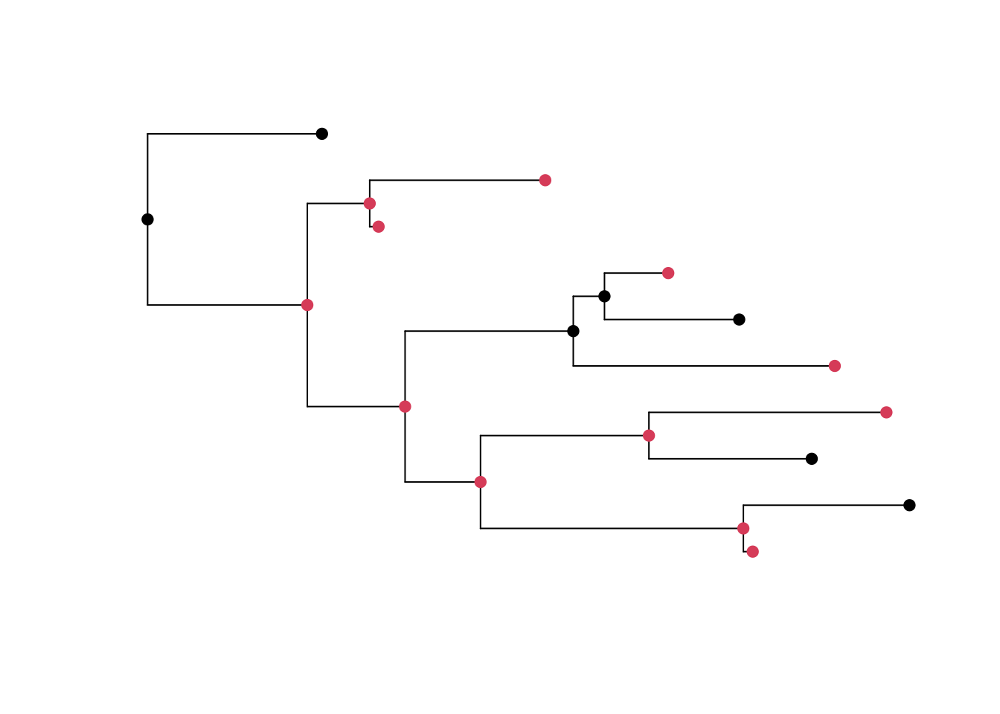
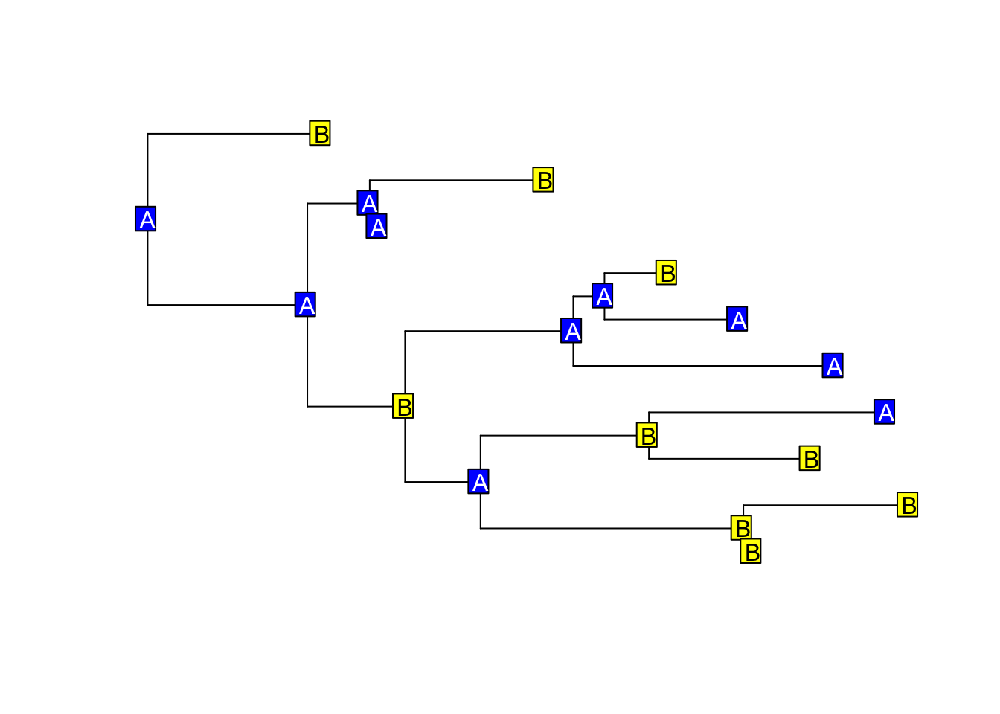
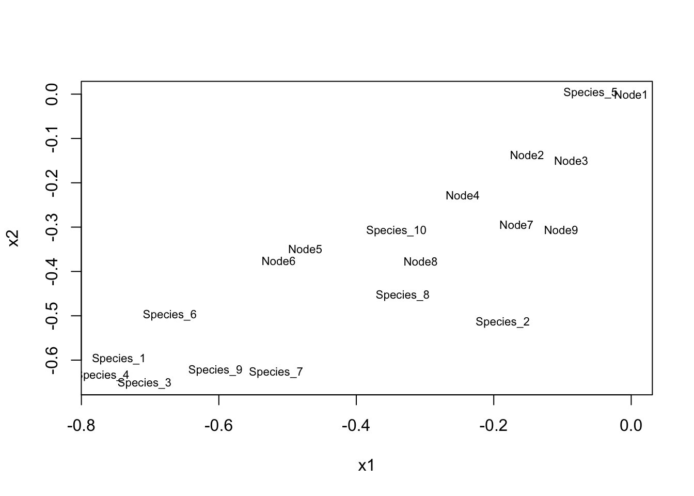

d.data <- matrix(sample(c(0,1), size = 1000, replace = T), ncol = 100)
rownames(d.data) <- paste0("Species_", seq(1,10,1))
colnames(d.data) <- paste0("C", seq(1,100,1))
View(d.data)Simulations tutorial
1.0 Introduction
Simulations have two primary uses in analyses of disparity. They can be used to explore the impact of potentially confounding factors so as to ensure the only differences between treatments are in said potentially confounding factor. Additionally, they can be used to visualise and test the fit of patterns in disparity to evolutionary models.
dispRity offers the most varied functions for simulating morphological data. However, we can also use ‘r’ variants of the base R distribution functions (e.g. rnorm, runif etc) and rTraitDisc and rTraitCont in ape.
2.0 Base R
The simplest way to generate data in R is to use the ‘r’ variants of the distribution functions and the ‘sample’ function.
3.1 Discrete character data
We can generate binary discrete character data (and convert it to a matrix) using the sample function by sampling a vector over and over again:
3.2 Continuous data
We can generate traditional morphometric data using the dist functions. These data can be uniform, normal, or lognormally distributed.
Normal distribution (we need the abs() function to ensure we don’t simulate negative values):
norm.c.data <- matrix(abs(rnorm(1000, mean = 3, sd = 1)), ncol = 100)
rownames(norm.c.data) <- paste0("Species_", seq(1,10,1))
colnames(norm.c.data) <- paste0("C", seq(1,100,1))
View(norm.c.data)Uniform distribution:
unif.c.data <- matrix(runif(1000, min = 0.01, max = 5), ncol = 100)
rownames(unif.c.data) <- paste0("Species_", seq(1,10,1))
colnames(unif.c.data) <- paste0("C", seq(1,100,1))
View(unif.c.data)Lognormal distribution (again, abs() needed):
lnorm.c.data <- matrix(rlnorm(1000, meanlog = 1, sdlog = 0.1), ncol = 100)
rownames(lnorm.c.data) <- paste0("Species_", seq(1,10,1))
colnames(lnorm.c.data) <- paste0("C", seq(1,100,1))
View(lnorm.c.data)Wrap these scripts in lapply and you can very quickly generate a list of matrices.
3.0 Ape
Ape gives us the ability to simulate along trees. This allows us to generate data with phylogenetic signal, which can be useful. There are three functions we can use: rTraitDisc, rTraitMulti, and rTraitCont. First, however, let’s take a look at how we can simulate phylogenetic trees.
Generating a tree. n specifies the number of tips. We can specify how to generate branch lengths using the br function. By default, it samples lengths from a uniform distribution bounded between 0 and 1. We don’t want zero-length branch lengths so let’s change this so the branch lengths are more akin to a time-calibrated tree (submit arguments min and max to rtree).
library(ape)
tree <- rtree(n = 10, tip.label = c(paste0("Species_", seq(1,10,1))), rooted = TRUE, br = runif, min = 0.1, max = 50)
tree <- makeNodeLabel(tree)
plot(tree)
edgelabels()Simple!
3.1 Simulating continuous data along a tree
Now we have a tree, we can simulate data. Let’s simulate a matrix along our tree. rTraitCont let’s us do this under Brownian motion or Ornstein-Uhlenbeck models. Let’s start with Brownian motion. Sigma specifies the standard deviation of the random component for each branch - higher values will mean a greater range of values.
We can simulate data under a fixed rate for each species. Let’s generate 10 characters start. We will achieve this by wrapping rTraitCont in the sapply function as below.
BM.cont.ape <- sapply(1:10, function(all) rTraitCont(phy = tree, model = "BM", sigma = 0.1))These functions also allow you to simulate data under variable rates of evolution (i.e. greater or smaller changes will be possible along each branch). This is done by submitting a vector to rTraitCont of length = number of branch lengths. Note that the submitted sigma values will be applied to branches in postorder order. You can visualise this with the following script:
plot(reorder(tree, order = "po"))
edgelabels()
Now to simulate data with a rate shift along branch 11. Lets return the nodes as well so we can record it better by setting ancestor to true.
BM.cont.ape.varR <- sapply(1:10, function(all) rTraitCont(phy = tree, model = "BM", sigma = c(rep(0.5,11),rep(0.1,7)), ancestor = T))We can simulate data under an OU model the same way. We simply need to add two more arguments: theta, the optimum value the trait will be drawn back to, and alpha, the strength of selective constraint that will operate on the trait (i.e. how strongly will it be drawn back to state theta).
OU.cont.ape <- sapply(1:10, function(all) rTraitCont(phy = tree, model = "BM", theta = 1, alpha = 1, sigma = 0.1))In the same way rate can be made to vary between branches in the BM model, rate, optimum value, and strength of selection for optimum value can be made to vary between branches by submitting vectors to arguments sigma, theta, and alpha respectively. Why not try it?
Note that these functions all produce negative values. You can preserve the distribution of the results by simply adding a coefficient (e.g. 10) to all values.
This is a powerful yet simple function. Read more about it here:
?rTraitCont3.2 Simulating discrete data
rTraitDisc lets use simulate categorical data under a variety of models. By default, it can simulate data under models which specify: 1. that the rate of change between each pair of character states is equal (equal rates model, “ER”), 2. that these rates are all different (all rates different, “ARD”), 3. that each pair of characters has a unique rate but these rate is the same in both directions (symmetrical, “SYM”).
You can specify these models using the abbreviations in the brackets, in which case you’ll need to specify arguments k (the number of character states) and rate (the rate values to be used), or as square matrices (just like distance matrices) in which the rows and columns are character states and each cell contains the rate of a possible transition (except for the diagonal cells, of course). In my opinion, the latter is the preferred approach, because this way, you’ll have specified the rates of every transition and so you’ll know exactly how your data are being simulated.
You can customise the character states used, the equilibrium frequencies of each state, and the ancestral state using the arguments states, freq, and root.value respectively.
If you want to get creative, you can also submit a function which takes two arguments: x, the state of the ancestor the node/tip, and l, the branch length of the branch in question.
Let’s work through a couple of examples using the in-built bird dataset of ape.
data(bird.orders)
# simulating the evolution of a single trait. The following will simulate data under the same equal rates model
rTraitDisc(bird.orders, model = "ER", rate = 0.1, k = 2)Struthioniformes Tinamiformes Craciformes Galliformes
A A A B
Anseriformes Turniciformes Piciformes Galbuliformes
A A A B
Bucerotiformes Upupiformes Trogoniformes Coraciiformes
B A B B
Coliiformes Cuculiformes Psittaciformes Apodiformes
B B A A
Trochiliformes Musophagiformes Strigiformes Columbiformes
A A B A
Gruiformes Ciconiiformes Passeriformes
B A B
Levels: A BrTraitDisc(bird.orders, model = matrix(c(0, 0.1, 0.1, 0), 2))Struthioniformes Tinamiformes Craciformes Galliformes
A A B B
Anseriformes Turniciformes Piciformes Galbuliformes
B B A B
Bucerotiformes Upupiformes Trogoniformes Coraciiformes
A A A B
Coliiformes Cuculiformes Psittaciformes Apodiformes
B A B A
Trochiliformes Musophagiformes Strigiformes Columbiformes
A A B B
Gruiformes Ciconiiformes Passeriformes
B B B
Levels: A BWe can simulate models with irreversibility (i.e. only one direction of change is possible).
rTraitDisc(bird.orders, model = matrix(c(0, 0, 0.1, 0), 2))Struthioniformes Tinamiformes Craciformes Galliformes
B B B B
Anseriformes Turniciformes Piciformes Galbuliformes
A B B A
Bucerotiformes Upupiformes Trogoniformes Coraciiformes
A A B A
Coliiformes Cuculiformes Psittaciformes Apodiformes
A B A A
Trochiliformes Musophagiformes Strigiformes Columbiformes
B B B B
Gruiformes Ciconiiformes Passeriformes
A A A
Levels: A BLet’s simulate data under an equal rates model and then plot the tip and node states as labels to visualise the change. We’ll use the tree we generate earlier.
x <- rTraitDisc(tree, model = matrix(c(0, 0.1, 0.1, 0), 2), ancestor = T)
plot(tree, show.tip.label = F)
nodelabels(pch = 19, col = x[11:19])
tiplabels(pch = 19, col = x[1:10])
Now for something a little more complicated. Let’s use a model with stasis for 10 time units (could be 10 mya) after a node, then random evolution. To do this, we’ll need to define a function.
foo <- function(x, l) {
if (l < 10) return(x)
sample(2, size = 1)
}Now this is done, let’s simulate the data and make the resulting tree a little more colourful by setting background colours.
y <- rTraitDisc(tree, foo, ancestor = TRUE)
plot(tree, show.tip.label = FALSE)
co <- c("blue", "yellow")
cot <- c("white", "black")
Y <- y[1:10]
A <- y[-(1:10)]
nodelabels(A, bg = co[A], col = cot[A])
tiplabels(Y, bg = co[Y], col = cot[Y])
You can read more about the function here:
?rTraitDisc3.3 Simulating a multivariate set of traits along a tree
Ape’s third simulating function, rTraitMult, lets you simulate multiple characters simultaneously. This seems redundant but in fact it lets use simulate correlated character evolution.
rTraitMult has no built in models. You have to specify them using a function which returns a vector of length p, where p is the number of traits.
Define the model.
mod <- function(x, l) {
y1 <- rnorm(1, x[1] + 0.5*x[2], 0.1)
y2 <- rnorm(1, 0.5*x[1] + x[2], 0.1)
c(y1, y2)
}Run the simulation and plot the traits to visualise the correlation.
set.seed(11)
x <- rTraitMult(tree, mod, 2, ancestor = TRUE)
plot(x, type = "n")
text(x, labels = rownames(x), cex = 0.7)
Read more about the function here:
?rTraitMultUsing ape, it is possible to simulate data that mimics the properties of empirical morphological data under a variety of evolution models. This allows us to explore the impact of confounding factors AND test the fit of our data to different models use base R statistics.
4.0 dispRity
dispRity supports a wide range of simulation functions. Tutorials for these can be found here: https://raw.githack.com/TGuillerme/dispRity/master/inst/gitbook/_book/details-of-specific-functions.html#model-fitting
Sections 4.6 and 4.7 cover the application of simulation approaches in model testing.
Section 5 covers the simulation of synthetic disparity data for more general purposes. Go to these sections and work through them.